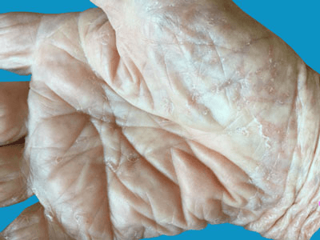

Scabies is a common and very itchy skin condition caused by human scabies mites. It can affect people of any age but is most common in the young and the elderly.

No, but it is common for several members of a family to have it at the same time.
If it is not treated, scabies lasts for months or even years; but with the right treatment, it clears up quickly and completely. Even after the mites have been killed by treatment the itching usually persists for a few weeks.